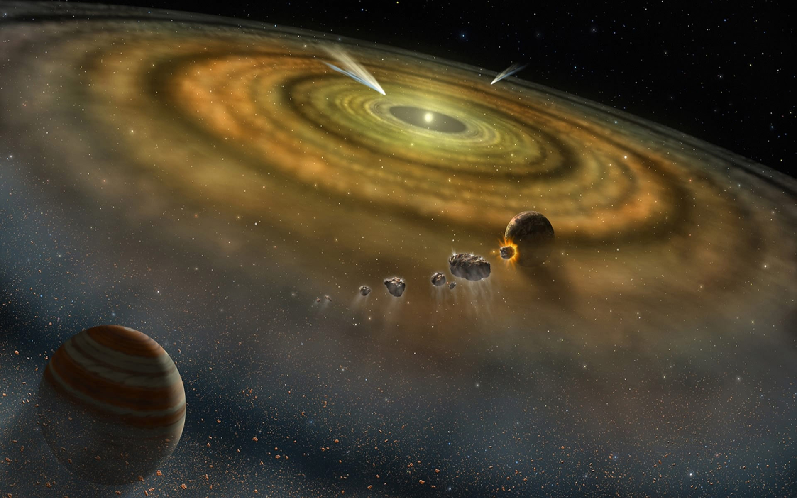

Planet formation
Aaron Serpilin 08-18-2020
Introduction
After our Sun and Earth, the most famous celestial bodies are planets. Who has not seen the mighty rings of Saturn or
Jupiter's red spot. We all know Earth is a planet but most of us do not have a clue how it formed. Some people know its history,
which is divided in eons and shorter periods, but they do not know what went before. In this chapter, we will analyze in full
depth not only how planets formed but also their orbits and some of their classifications.
Definition
Until recently, in 2006, scientists did not know how to accurately define a planet. We all have heard about Pluto, one
of our solar systems dwarf planets. You might wonder why is it no longer considered a planet?
A planet is an object massive enough whose gravity allows it to be spherical and whose gravity allows it to be dominant in its
orbit, clearing away any smaller objects. Asteroids are not planets because their gravity is too weak to make them
spherical, they have strange shapes because they normally are a bunch of loose pieces forced together. Answering the initial
question, Pluto is spherical, yes, but it resides in the Kuiper Belt, an area littered with smaller objects. This means that Pluto
meets one of the rules but does not the other. Some scientists state that planets must also orbit a star, but some planets
do not belong to a solar system and reside in the vacuum of space, these are known as rogue planets.
 Image credit: NASA
Image credit: NASA
Planet's mass
Now we dive into the big stuff, or shall I say small? Nothing is created big, planets start forming from specs of dust whose
average size is of some millimeters. Just think about the Big Bang, everything we know of was once very, very small. Everything
was concentrated in a point one-trillionth the size of the period that ends this sentence. Lets start by seeing where planets
get their mass from.
All solar systems start off with a cloud of gas made predominately of hydrogen. These clouds are
the birthplaces for stars, these clouds will later on also give birth to all the planets and asteroids of the solar system. In some
areas of these clouds, dense pockets of gas called cores gather. This high mass causes the core to contract and due to the compression,
it also gets heated. This is how a protostar is born. This is a short summary of this process, in the
life cycle of stars chapter we analyze this more in depth. The collapse of the core
creates a powerful gravitational force which makes the remaining cloud of gas to start rotating. Once this
happens, we find ourselves with a protostar surrounded by a protoplanetary disk. This is where planets will start to form.

Image credit: scitechdaily.com
At the beginning, scientists thought that this was it, but there is way more. A cloud of gas normally has between 1000-1000000 times
the mass of our solar system. So what happened with the rest? If all the mass was conserved, our Sun and the planets in our solar system
would be exponentially bigger. There are two answers to this problem, the first one is through a process called accretion. In this process,
matter gradually accumulates into particles and later on into more massive objects once they are massive enough to exert gravity.
Due to the friction in the disc due to the clashing of particles, gas in the inner track loses speed, gives up to the stars gravitational pull, is attracted by it
and is later evaporated by the star. But this process is not enough, it would take several thousand million years to clear the outer layers.
And this is a very big problem. After hundreds of observations, scientists noticed that all stars younger than 10 million years
old have these discs, but those older do not. This is why we need another process to speed things up.
The second process encharged for the elimination of the disc is called photoevaporation. After some years, the protostar starts to
go through its adolescence. Here the star goes through a rebellious stage and becomes a T-Tauri star. T-Tauri stars emit
damaging radiation and winds charged with high-energy particles. In the inner tracks, this simply
heats up the disc. In the outer layers, where the gravitational force is weaker, this energy boost allows particles to escape. This process
is thought to be responsible for the destruction of the main part of the disc. So now we have the mass, lets dive into the formation
of planets.
Formation
As said before, planets are not born big. Planets are formed after thousands of millions of years in which microscopic
dust grains in the disk stick together to form a planet. There is normally a barrier in solar systems that determines
the fate of a planet, this barrier is called the frost, ice or snow line. This is the point where ice appears and in our solar system it
is found in the outer part of the asteroid belt. You might ask why this is so important? In the disk, normally everything that
goes after the ice line are low-density ices. This is why planets before this barrier are rocky and solid meanwhile the others are
normally gas giants.
At the beginning, the disk is entirely made up of floating dust grains. When these dust grains collide they stick to each other
and form a bigger dust grain. Thankfully, dust grains do not have circular orbits, if they had circular orbits, the collisions would be
extremely rare. Instead they are influenced by the Brownian motion, the atoms of the dust grain determine its movement. Now,
we need a kind of glue for these particles to stick. This glue is the electric charge of the atoms and molecules. The charge from
the negative end attracts the positive end of another atom or molecule. This is known as the van der Waals force. This force is very
weak and only works when the collisions are gentle. Once the grains stop being micrometer-sized and become millimeter-sized,
their speed increases, therefore the collisions stop being gentle and then this force fails to provide a sufficient amount
of stick.
 Image credit: Revision Science
Image credit: Revision Science
We have bumped into a problem. The dust grains have grown to be millimeter-sized, but we cannot go further. There is a solution
to this, but it can only happen if by some luck some grains make it to the centimeter scale. If two dust grains of the same size
collide, none will grow, but if they collide with a dust grain bigger, the smaller grain will rebound but leave up to half its mass
behind. Imagine throwing jelly to someone's face, a large amount will fall but some will remain in that person's face. There are
two ways grains can make it to the centimeter scale and get past the bouncing barrier, and both have to do with luck. The first one
is if by some range of values, some dust grains maintain a very slow velocity and allow the van der Waals force to build up a
centimeter grain. The other one is if the grains are fluffy, this makes it easier for them to stick.
Once the dust grains stick and form bigger solids, their movement stops depending entirely on the gas. From this point, they
can feel the stars gravity and the supporting force of their rotation. This is known as Keplerian motion, named after Johannes
Kepler. Besides that, they also feel the pressure of the gas. Due to the accretion of material near the star, the inner disk is denser.
This causes two gas motions, a slow gas motion or a headwind that slows down the dust grains making them lose force and causing them
to spiral inwards to the star and a fast gas motion that prevents them from falling inwards. This creates a meter-size barrier.
Small objects are more influenced by the headwind that bigger objects. Unfortunately, it takes approximately 100 years for small objects to
spiral inwards and burn into the star, meanwhile it takes way longer for them to become bigger objects.
This meter-size barrier condemns most small objects, but it creates a process called streaming instability where the solid objects
spiraling inwards, bump into smaller objects and can collect mass on the way. Once these objects collect enough material, they can
enable gravity and pull in other rocks to become kilometer-sized objects. These solids are called planetesimals. Here, the headwind
becomes less significant and stops the inward spiral.
 Image credit: Science.com
Image credit: Science.com
When a bunch of objects are dragged inwards from the outer layer of the disk, they do not move inwards homogenously, some areas
posses a higher concentration of these. Following this process, more and more objects reach this area and join the peloton. This
results in a runaway process, this is key for creating bigger objects since these pelotons are basically food. A planetesimal will
gather more material if it is bigger due to its stronger gravity. This process becomes very efficient because the speed at which it
gathers material increases with its size. When two planetesimals come across, they will feel two forces. The gravitational force of
the star and of the other planetesimal. The point where these two forces balance is called the Hill radius. This is where the
gravity of something is stronger than its star. A planetesimal cannot keep a safe orbit unless its Hill radius is around 3 and a half times
the Hill's radius from its neighbor. From this point, objects do not simply collide. Once an object is inside the Hill radius, its
starts circling and then collides chaotically. This is where the runaway growth becomes less efficient and enters a oligarchic growth.
This process continues for a very long time until the planetesimal has consumed all the material in its Hill radius. This is when
it reaches a maximum mass known as the isolation mass. From now on, these planetesimals become planetary embryos. The densest
elements fall down to the bottom of the embryo and forms the core. After this process, we are left with a bunch of
planetary embryos. During the next thousands or millions of years, these embryos
go through collisions and some are ejected to the outer parts of the solar system. Another way of clearing the path is
by accelerating other planetesimals through gravity. Some embryos have very strong gravitational pulls so they are able to
accelerate other objects and eject them. This is the reason why we have the asteroid and Kuiper belt. But in order to form these
two belts, our solar system also needed huge gravitational pulls to prevent these ejected objects to exit the solar system. This
is where the gas giants come in.
Gas giants
Gas giants are literally what they sound like, very big planets made up of gas. Gas giants never form in the inner part of the
solar system because of two reasons. First of all, the solar winds of stars push further away light elements and gases meanwhile
the solid and heavier elements that make up the rocky worlds stay in the inner part. The other reason is because when
gases are near such hot objects such as stars, their gas starts to evaporate through a process called hydrodynamic escape. We will see a bit later in the orbit section that there are planets
called hot Jupiters which are gas giants located in very close orbits to their stars. These arrive there due to various reasons but
are never formed there. The reason why gas giants are so much bigger than rocky worlds is because their Hill radius is much bigger. Due
to the distance, the gravitational force of the star weakens. This means that the gravity of these gas giants are more dominant in those
zones. The cores of these planets are rocky or icy, they are made up of the few solid elements that made it out there. Normally rocky planets have
thin atmospheres because they formed a bit late or because they were not massive enough, therefore not being able to grasp a big atmosphere. On the other hand, gas giants form quicker
due to their bigger Hill radius, and therefore grasp bigger atmospheres.
The atmospheres of gas giants are formed when their solid core attracts the light elements of the disc. This creates a
primitive atmosphere that will constantly be searching for a balance. The gravity of a gas giant increases each time it traps more
material. When this happens the atmosphere is compressed and this causes it to heat. When the heat and the gravity of the gas giant
balance each other, the atmosphere neither expands or contracts. This is known as hydrostatic equilibrium. Until the disc disappears,
this process continues, the atmosphere will keep on readjusting and the gravitational force will continue growing.
This process takes a lot of time due to how far out these gas giants are. Uranus and Neptune would have taken over 100 million years
to form at their current location. This is why it is most possible that they formed closer to Jupiter's and Saturn's position and were
later ejected further out.
After the atmosphere stops growing, it will start to cool and collapse. This causes the atmosphere to become denser, making it
harder to compress. Deep inside a gas giant, the pressure is so high that it transforms its hydrogen gas into an exotic liquid
metal, making it even harder to compress further. From now on, the contraction becomes incredibly slow. Jupiter contracts a millimeter
per year, but it is still enough to heat the planet, making it radiate more energy than it receives from the Sun.
This process is known as the core accretion model.
 Image credit: NASA
Image credit: NASA
There is also the possibility that planets formed really far away, even making it to 100au, this makes it very difficult for them to gather enough
material. In recent years, astronomers have constantly been finding new planets with these characteristics. There is a method
where this could happen and it is called disc instability. This happens when the gravity of dense pockets of the disc is
extremely strong and it breaks apart the disc. This results in a spiral arm of gas that is ejected far away. A planet can
form in these hostile conditions.
Orbits
The orbits of planets can be key in their characteristics. We saw in the gas giants section that gas planets can only form
far away from their star, but there is a type of planets called hot Jupiters who orbit extremely close to their star and
who are made of gas.
The orbits of planets are determined during the existence of the protoplanetary disc because the flow of gases determine
either if it wins or loses speed. This causes the planets to remain in their birth place or to move. After that, only
gravitational distortions or collisions can change them. In the case of massive planets near asteroids, due to their gravitational
pull they can eject asteroids but every time they do that, they receive some recoil. Imagine you are shooting a gun, you fire it and
the bullet goes in its own direction but you receive the recoil and take a step back. This happens with these planets, their orbit
can be distorted due to the constant ejection of asteroids. This is known as planetesimal-driven migration.
The orbits of planets are determined by the rotational energy of the cloud they were made of. That is why the Sun and all
the planets orbit the same way. This is known as prograde, but an object can also orbit the opposite direction of the solar system, this is known as a
retrograde orbit. For example, the Halley comet orbits in retrograde. In the case of planets, if it orbits the opposite direction
of the solar system, that means that bad stuff happened to that object during its initial stages. It probably got slammed by
something, or severely disturbed gravitationally, this caused its axes to tip.
Planets can also achieve retrograde through the Kuzai-Lidov mechanism. This mechanism proposes that two large bodies can change the orbit of a smaller
object. The gravitational interactions of these two objects cause the orbit to periodically alternate between a highly inclined
to a highly elliptical orbit. In our solar system, this can only be felt by an object between the sun and a planet. But this explains
the orbits of exoplanets such as WASP-17b. WASP-17b is a hot Jupiter that went into retrograde due to the distortion caused by a binary
star system. It originally was a normal gas giant, started planetary migration (we will see that a bit later) and
once it was close enough to its star, it felt the distortion of the neighbor star. When the height of a planets orbit
becomes very extreme, almost vertical, it can cause it to enter retrograde.
Although it might seem that planet orbits are easy to understand, they are not. Since orbits are so important, the misunderstanding
of these can cause other problems. For example, there is a pattern in solar systems where the further out planets are, the more
massive they are due to their greater Hill radius. This happens in our solar system from Mercury to Venus to Earth, until Mars
which is 1/10th of the Earth's mass. The only solution to this problem was Jupiter. Jupiter formed near its current location and started
planetary migration, a process where a planet slows down and start migrating inwards. Jupiter once was near Mars' current location. Due to
its immense gravity, it scattered planetesimals and used a lof of the mass located there. Its gravity created a gap in the disc where
there was nothing because it swallowed everything around it. Migration type 1 is before this gap occurs and migration type 2
occurs once this gap is created. Until today, we are still not sure how this migration can stop alone.
This is how gas giants end up near stars and become hot Jupiters. Nothing stops their migration until
they end up close to their star. Saturn also started its migration afterwards and at one point they became very close to each other.
Saturn and Jupiter entered in a unique orbit. They were in a 2:3 resonance which means that Saturn orbited the Sun twice
in the time Jupiter orbited it three times. This is called an orbital resonance. Since Jupiter was more massive, when Saturn was
behind it, it boosted it, and when Saturn was in front, it pulled it back. At one point, the orbits of these two basically
intersect and they moved slightly closer to each other. Here, both are being tugged by gas on both sides, the headwind and the
fast gas. Saturn mostly felt the headwind and Jupiter the fast gas meaning Saturn wanted to go inwards and Jupiter outwards. In this case,
the most massive planet wins so Jupiter moved forward out in the solar system and ejected Saturn. This explains the leftover asteroid belt
and why Mars is smaller than Earth. This process is called the Grand Track model and was proposed by Kelvin Walsh and Alessandro
Morbidelli in 2006.
 Image credit: NASA
Image credit: NASA
After these two giants went through their planetary migration, it was Uranus' and Neptune's turn. Remember I mentioned earlier that
they probably started off closer to Jupiter's and Saturn's current location? Well, following the Grand Track model, Jupiter and
Saturn moved near their current location. Jupiter would be approximately at 5au and Neptune at 15au, Uranus and Saturn settling between them.
So how did Jupiter and Saturn eject Neptune and Uranus further out to the edge of our solar system? There are two hypothesis that explain
this phenomenon. The Nice Model and the Nice Model 2.
In the Nice Model, the planetesimal-driven migration caused the orbits of Jupiter and Saturn to approach Uranus and Neptune and
send them out. In this hypothesis, the planetesimals were scattered around the solar system. On the other hand, in the Nice Model
2, there was a field of objects that disturbed the orbits of Jupiter and Saturn slightly and caused them to also eject
Neptune and Uranus. Both models state that the orbits of Jupiter and Saturn were disturbed but in the Nice Model the planetesimals were
scattered and in the Nice Model 2 they were all bunched up.
 Image credit: Astronomy & Astrophysics
Image credit: Astronomy & Astrophysics
Chthonian planets
Well, now we have seen that rocky planets form in the inner parts of the solar system, and gas giants form in the outer parts.
Due to some anomalies, the orbits of gas giants can change, causing them to spiral towards their star and orbit very closely. These
are the three types of planets we have seen so far. Besides these, there are other types of planets called super Earths, these are
planets smaller than Neptune with sizes stretching between 1.25 and 4 masses of Earth.
Since there is no clear barrier between rocky super Earths and mini Neptunes, these two types of planets are simply classified as
super Earths. Of course, there are exceptions with some
super Earths being bigger. Basically Super Earths are big Earths. To accumulate such mass, these planets needed to form in the outer
part of the solar system. Once we designated a name to these type of planets, once again astronomers thought
that was it. Unfortunately, they were wrong, after the discoveries of hot Jupiters, astronomers also found hot Super Earths.
Once again, astronomers had a headache finding out how these planets formed, and they came up with a few solutions. One of their
hypothesis were Chthonian planets, which meant beings that belonged to the underworld. Mentioned earlier in the gas giants section,
when gas giants approach their stars, their gas starts to evaporate through a process called hydrodynamic escape. Chthonian planets are
a hypothetical type of planet that is created from the solid remnants of hot Jupiters. But this process is too slow to evaporate the
whole atmosphere in the stars lifetime. The other way in which an atmosphere can be removed is by gravity. Due to the proximity of
hot Jupiters, their Hill radius can be inside their own atmosphere, this means that the gravity of the star can dominate inside the
atmosphere and strip it apart. The remaining core and solid parts form Chthonian planets, hot super Earths. The only problem with this
theory is that we have never found a planet between the two regimes, getting its atmosphere stripped. We have only found the two ends,
the hot Jupiter and the hot super Earth.
 Image credit: Expanding Earth research
Image credit: Expanding Earth research
If you want to know how astronomers discover exoplanets and determine their mass and density, click on the following link:
Finding exoplanets. In this chapter we go through how astronomers discover exoplanets
and the tools they use to find out their mass and density. Through these tools, astronomers classify planets as hot Jupiters,
hot super Earths, rocky planets, gas giants, dwarf planets and others.
There are a other methods in which a hot Super Earth might be created, we are only going to dive into four different methods. The first one being a bit obvious, it got knocked out of
its normal orbit. Planetary migration until today is the most accepted method for creating hot super Earths. Astronomers had to
come up with a method to create hot super Earths that was common. Approximately 1% of all stars have hot Jupiters, but 50% have
hot super Earths. When we analyzed planetary migration, I said that we are still not sure how migration can stop alone. Well, we
do have an answer in this case. When these planets start migrating inwards they feel the gravitational pull of the star alone. The thing is
that when the orbits of planets approach each other, they can maintain stable orbits. They can enter in resonance and due to their proximity to the star, it does not
allow them to blast away, therefore remaining in those tight orbits. Another method where the combining of the gravitational pulls of the
planets plus the gas conditions can flip the direction of the migration. Therefore, they stop spiraling inwards and start going outwards until
the disc evaporates, then they maintain their orbit. From here they can still go closer to their star or further away by
being bombarded by asteroids or by planetary-driven migration.
There is a problem though with this method, it automatically dismisses that there could be life in the goldilocks zone
of half of the solar systems. Due to the abrupt migration of these planets and their huge mass, their gravity could send of
planets in the goldilocks zone to the outer parts of their solar system or even batter them into pieces. Luckily in our solar system, Jupiter only made it until
Mars and along with Saturn, did not allow Uranus and Neptune to hurl any further inwards. If Uranus and Neptune completed their migration
and did not eject themselves outwards, our solar system would have two hot super Earths and they would have kicked Mars, Earth,
Venus and maybe even Mercury out of orbit.
The second method states that hot Super Earths were actually created there. If no other massive objects interferes, this can only happen with strangely shaped protoplanetary discs. In this case, dense
pockets of mass gather and similar to disc instability, the inner disc breaks apart. The problem is that the gathered mass would only
be gases and dust and its strange shape would not allow it to remain close to the star. The disc would require strange anomalies such
as it getting progressively hotter the further away out from the star. No normal planetary disc con form hot Super Earths. In can form
this way or by other methods, the mass could arrive there after the disc is gone.
Going on to the third method, it is known as the planet broom. In this case, during their migration, hot Jupiters do not only eject
asteroids and planetesimals away, but they also direct them towards resonant orbits. As seen before, resonant orbits are very stable
and once enough material gathers, the gravity of the hot Jupiter will force them to pile together and form a solid planet bigger than
any other planet in the inner solar system.
 Image credit: Discover magazine
Image credit: Discover magazine
The final method is called the dead zone trap. In this method material gathers in close to the star thanks to the headwind.
Similar to the runaway process, clouds of gas and dust spiral towards the star and join together to form the inner part of the disc.
The closest part of the disc feels the complete radiation of the sun. This radiation charges the particles of the atoms of the dust
and gas clouds. The disc is attracted by the magnetic field of the star, but the inner part of the disc works as a shield and does not
allow the stars energy to penetrate to the center of the disc. Magnetic fields are created when a particle is in movement and receives energy,
due to the magnetic field created in the inner disc, it cancels out the magnetic field of the star and does not allow energy to penetrate.
Therefore, the dust in the center feels no tug, boost or any magnetic field. This zone where the magnetic forces are turned off is known as the dead zone.
The gas density rises at the edge of the disc and starts to compress and heat, receiving a slight boost that allows it to
travel at the same speed as rocks and remove the headwind. No longer dragged towards the star, these rocks collect around the edge of the
dead zone and begin to collide to give birth to a hot super Earth.